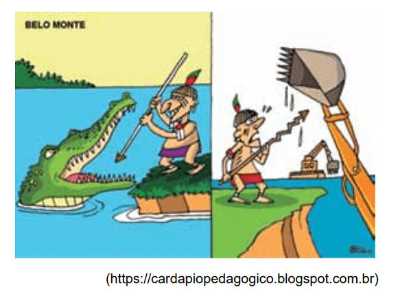

Conteúdo:
Questão 01
(FUVEST 2006) No Brasil, o setor agroindustrial prevê aumento significativo da produção de cana-de-açúcar para os próximos anos. Isso pode ser atribuído:
a) à maior flexibilidade da nova regulamentação ambiental, que implicará uma importante diminuição de custos.
b) ao atual acréscimo de subsídios governamentais para a produção de álcool, chegando a valores semelhantes aos do Proálcool na década de setenta.
c) à diminuição gradativa de áreas de produção da soja transgênica, aparecendo a cana como alternativa econômica e ambientalmente viável.
d) à recente ampliação da demanda externa por todos os subprodutos da cana devido à desvalorização do real nos últimos dois anos.
e) ao aumento do interesse internacional por fontes renováveis de energia, em função do Protocolo de Kyoto.
Questão 02
(UFPEL-RS 2006) Devido à sua grande extensão territorial, o Brasil apresenta muitos contrastes, seja em aspectos físicos, econômicos ou humanos. Com base nessas diferenças, o IBGE (Instituto Brasileiro de Geografia e Estatística) dividiu o país em cinco regiões há cerca de trinta anos. As regiões identificadas pelo IBGE são as seguintes:
I. Norte
II. Centro-Oeste
III. Nordeste
IV. Sudeste
V. Sul
Analise as seguintes afirmações sobre a divisão regional do Brasil.
( ) É uma região de contrastes nos aspectos naturais, humanos e econômicos. Ela apresenta áreas chuvosas e áreas de clima semiárido. Além disso, quase um quarto da população vive na miséria, enquanto uma pequena parcela detém parte das riquezas. Ela contribui muito com a migração para outras regiões.
( ) É a região mais extensa do país, embora apresente baixa densidade demográfica. Nessa região predominam aspectos naturais, floresta densa e heterogênea, clima quente e úmido, rios extensos e caudalosos, os quais drenam terras geralmente de altitude pouco elevada. Ela equivale a cerca de 60 % do território brasileiro.
( ) Região que corresponde a 6,8 % do território brasileiro, mas é a segunda em importância econômica. Ela apresenta uma densidade demográfica significativa, com mais de 41 hab./km². Nessa região, destaca-se o predomínio de um clima subtropical.
( ) Região mais povoada do Brasil, a qual possui quase 43% da população brasileira e concentra a maior produção agrícola e industrial do país, assim como a maior rede de transportes. É nessa região que podemos observar melhor a diversidade espacial resultante do desigual desenvolvimento do país.
( ) Esta região corresponde a quase 19% do território brasileiro. Pouco povoada, apresenta uma densidade demográfica de 6,8 hab./km². Foi desbravada nos séculos XVII e XVIII pelos bandeirantes, que procuravam pedras e metais preciosos. Desde a década de 1960, a região atrai imigrantes por oferecer grande quantidade de terras a serem exploradas.
Escolha a alternativa que apresenta a relação correta entre as regiões e suas características.
a) I, II, V, III e IV.
b) II, III, IV, V e I.
c) V, III, I, II e IV.
d) III, I, V, IV e II.
e) IV, I, III, II e V.
Questão 03
(UEA 2017) Examine a charge que faz referência à construção da usina hidrelétrica de Belo Monte, no Estado do Pará.

A charge aborda uma questão de ordem
a) política, revelando as qualidades na comunicação e no acolhimento da população diante de grandes obras infraestruturais.
b) territorial, indicando prejuízos na fauna e na flora brasileira pela modernização de técnicas construtivas.
c) estratégica, que inviabiliza as práticas despojadas e as soluções tradicionais para a construção do espaço.
d) social, que compromete as bases culturais e os meios de sobrevivência de comunidades tradicionais.
e) econômica, que exige novas ferramentas e maiores investimentos para o equilíbrio da relação sociedade-natureza.
Comentário:
É interessante observar o que o texto retrata sobre a charge. Embora outras alternativas possam estar corretas, a charge expressa uma preocupação social com os povos indígenas tradicionais.
Questão 04
(ENEM 2021)
Em regiões antes consideradas periféricas, a exemplo do Centro-Oeste, sob o impulso da técnica, há condições para atividades com alto nível de capital, tecnologia e organização, dando lugar a fenômenos de descentralização seletiva. Ainda que as atividades de comando tendam a se manter concentradas, a rede de atividades produtivas mais modernas tende a se expandir territorialmente.
BERNARDES, J. A. As estratégias do capital no complexo da soja. In: CASTRO, |. E.; GOMES, P. C. C.; CORREA, R. L. (Org.). Brasil: questões atuais da reorganização do território. Rio de Janeiro: Bertrand Brasil, 2008 (adaptado).
O processo característico do espaço rural responsável pela forma descrita de ocupação produtiva do Centro-Oeste brasileiro foi o(a)
a) difusão de sistemas extensivos.
b) propagação do cultivo itinerante.
c) introdução de práticas ecológicas.
d) fortalecimento do trabalho familiar.
e) desenvolvimento do setor agroindustrial.
Questão 05
(UECE 2018) Considerando dados e informações relativos ao sistema regional do Brasil, assinale a afirmação verdadeira.
a) As dinâmicas espaciais das regiões Norte e Centro-Oeste do Brasil sintetizam tempos e espaços diferenciados: a primeira é marcada pela circulação fluvial e rodoviária que abre clareiras na floresta; e a segunda é definida pelo papel do moderno agronegócio.
b) Na região Sudeste do país, dadas as características históricas e geográficas de seu desenvolvimento, a distribuição da população apresenta estrutura dispersa, sem efeito significativo de aglomeração demográfica nos maiores centros urbanos metropolitanos.
c) A região Sul do Brasil corresponde ao núcleo original da industrialização, fenômeno que justifica estar nas capitais dessa região a maior centralidade exercida pelo mercado financeiro.
d) Na região Nordeste do país, é flagrante a transformação causada pelo dinamismo econômico que fortaleceu as cidades médias em detrimento do tradicional papel central das metrópoles.
Questão 06
(UNESP 2022) Configura uma característica econômica do Agreste nordestino
a) o abrigo de empresas desenvolvedoras de softwares, sendo um exemplo a cidade de Recife, em Pernambuco.
b) a venda de excedentes das policulturas familiares em tradicionais feiras livres, sendo um exemplo a feira da cidade de Campina Grande, na Paraíba.
c) a variada oferta de vias de escoamento produtivo em portos, sendo um exemplo a estrutura da cidade de São Luís, no Maranhão.
d) a monocultura de arroz ao longo de vales fluviais, sendo um exemplo o vale da cidade de Teresina, no Piauí.
e) o investimento na recuperação dos centros históricos turísticos, sendo um exemplo a cidade de Maceió, em Alagoas.
O Agreste compreende a sub-região do Nordeste entre a Zona da Mata e o Sertão Nordestino. A economia é baseada em atividades ligadas à policultura alimentícia em pequenas propriedades comandadas por grupos familiares. Devido ao crescimento populacional da sub-região com o transbordo da economia litorânea, surgiram cidades médias com mercado consumidor ampliado e diversificado, como por exemplo, Campina Grande (PB).
Questão 07
(UNCISAL 2013) Uma pesquisadora produziu as seguintes características para o Brasil:
“Brasil, quinto país do mundo em extensão territorial, é o mais vasto do hemisfério sul. Ele faz parte essencialmente do mundo tropical, à exceção de seus estados mais meridionais, ao sul de São Paulo. O Brasil dispõe de vastos territórios subpovoados, como o da Amazônia, conhece também um crescimento urbano extremamente rápido, índices de pobreza que não diminuem e uma das sociedades mais desiguais do mundo. Qualificado de ‘terra de contrastes’ o Brasil é um país moderno do Terceiro Mundo, com todas as contradições que isso tem por consequência”
[Adaptado de] DROULERS, Martine. “Dictionnaire geopolitique des états”. Organizado por Yves Lacoste. Paris: Éditions Flamarion, 1995.
O Brasil é qualificado como “terra de contrastes” por
a) fazer parte do mundo tropical, mas ter um crescimento urbano semelhante ao dos países temperados.
b) não conseguir evitar seu rápido crescimento urbano, por ser um país com grande extensão de fronteiras terrestres e de costa.
c) possuir grandes diferenças sociais e regionais e ser considerado um país moderno do Terceiro Mundo.
d) possuir vastos territórios subpovoados, apesar de não ter recursos econômicos e tecnológicos para explorá-los.
e) ter elevados índices de pobreza, por ser um país com grande extensão territorial e predomínio de atividades rurais.
Questão 08
(UNESP 2022)
“A união entre ciência e técnica que, a partir dos anos 70, havia transformado o território brasileiro revigora-se com os novos e portentosos recursos da informação, a partir do período da globalização e sob a égide do mercado. E o mercado, graças exatamente à ciência, à técnica e à informação, torna-se um mercado global. O território ganha novos conteúdos e impõe novos comportamentos, graças às enormes possibilidades da produção e, sobretudo, da circulação dos insumos, dos produtos, do dinheiro, das ideias e informações, das ordens e dos homens. É a irradiação do meio técnico-científico-informacional que se instala sobre o território […]. ”
(Milton Santos e María L. Silveira. O Brasil, 2006.)
No território brasileiro, a irradiação apresentada ocorreu
a) restrita às sedes dos estados que dispunham de capital e influência política para receber as novidades do mercado externo.
b) estruturada em arquipélagos de modernidade alheios às heranças socioeconômicas regionais.
c) de modo homogêneo pelas regiões do país ao receber, constantemente, recursos federais para o desenvolvimento nacional.
d) estimulada pelo desejo de cooperação internacional para superar fragilidades de renda, educação e saúde nas esferas locais.
e) de maneira espacialmente contínua nas regiões Sudeste e Sul e de modo pontual nas demais regiões do país.
O professor Milton Santos definiu uma regionalização do território brasileiro a partir das características do meio técnico-cientifico-informacional. Assim, dividiu o Brasil em Amazônia, Nordeste, Centro-Oeste e Concentrada. Esta última região é definida por Milton Santos como sendo aquela que apresenta a irradiação técnico-cientifico-informacional e envolve os estados do Sul e do Sudeste do País. Já outras regiões brasileiras apresentam alguns casos pontuais ligados a essas características da Terceira Revolução Industrial.
Questão 09
(UEL 2008) Assinale a alternativa correta quanto aos perfis natural e socioeconômico das regiões brasileiras.
a) NORTE Perfil natural: presença de manguezais, clima tropical de altitude, solos férteis e rede hidrográfica modesta. Perfil socioeconômico: densamente povoada, com a presença de significativo polo industrial e agricultura mecanizada. Presença de siderurgias e petroquímicas.
b) NORDESTE Perfil natural: existência de mares de morros, mata atlântica que passou por intenso desmatamento. Solos férteis como a terra roxa. Perfil socioeconômico: região densamente povoada, com significativa predominância da atividade mineradora. Predomínio da atividade extrativista.
c) CENTRO-OESTE Perfil natural: apresenta clima subtropical com estação chuvosa e seca bem distribuídas ao longo do ano, predominando a ocorrência de vegetação pantaneira e uma das redes hidrográficas mais densas do território nacional. O solo é pobre. Perfil socioeconômico: poderoso centro econômico com predominância da atividade industrial e com elevados índices de poluição. Densamente povoado.
d) SUDESTE Perfil natural: vegetação homogênea, com ocorrência de clima equatorial e predominância de rios intermitentes em solos arenosos. Perfil socioeconômico: Região litorânea densamente ocupada, destacando-se em sua rede urbana o setor de serviços como agente polarizador. A estrutura agrária é predominantemente rudimentar.
e) SUL Perfil natural: Planalto Meridional com ocorrência da Mata de Araucária. Apresenta o clima subtropical, com chuvas bem distribuídas ao longo do ano. Perfil socioeconômico: Área de colonização europeia, caracterizada pela diversidade das atividades econômicas, como a agropecuária e a indústria.
Questão 10
(UECE 2016) O Brasil, em virtude da sua extensão territorial, apresenta uma grande diversidade regional em termos físico-ambientais, como também sociais, culturais e, principalmente, econômicos.
Atente ao que se diz a respeito da diversidade das regiões do Brasil.
I. Na Região Nordeste, o grande número de cidades litorâneas e seus atrativos particulares contribuem para o desenvolvimento do turismo e para o fortalecimento da economia.
II. A Região Centro-Oeste é a maior região do Brasil, correspondendo a aproximadamente 42% do território nacional, e possui uma população de cerca de 15,8 milhões de habitantes.
III. Segundo o IBGE, a Região Sudeste concentra aproximadamente 40% da população brasileira. O que a torna a região mais populosa e povoada do País.
Está correto o que se afirma apenas em
a) I e III.
b) I.
c) II e III.
d) II.
O item II está incorreto, a região Norte é a maior em extensão territorial. O Centro-Oeste é a região menos populosa e integrada pelos estados de Goiás, Mato Grosso, Mato Grosso do Sul, além do Distrito Federal.